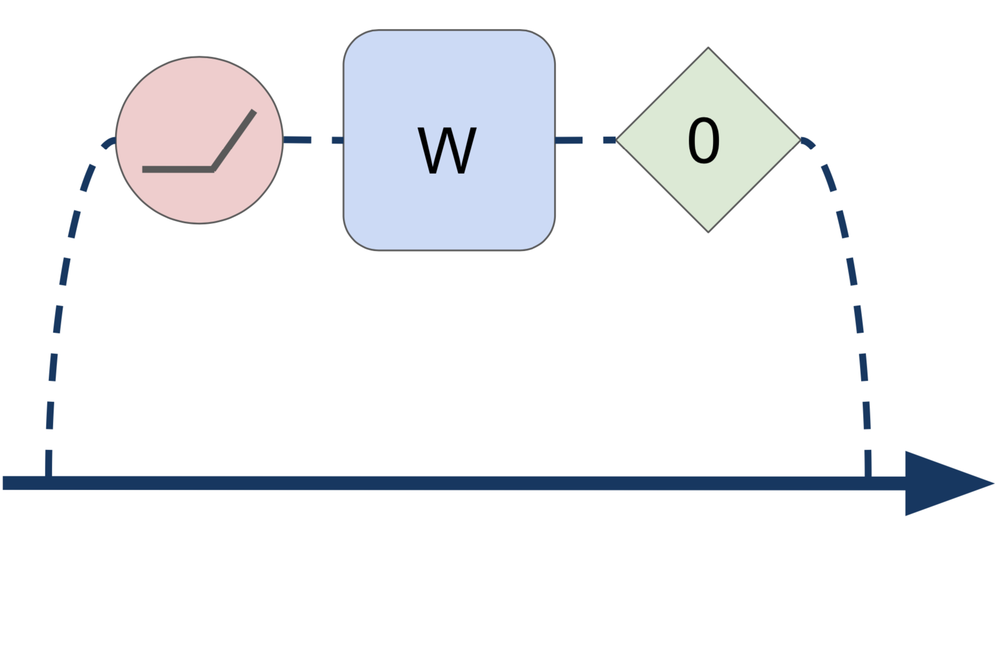
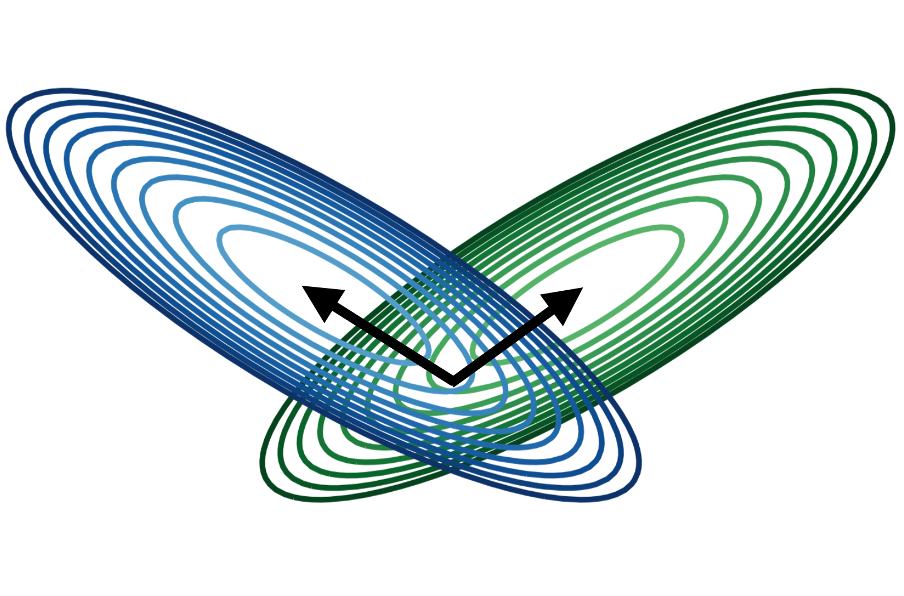
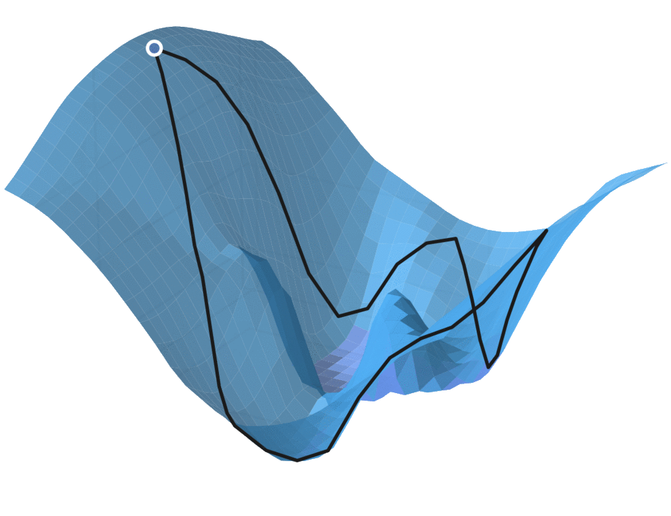
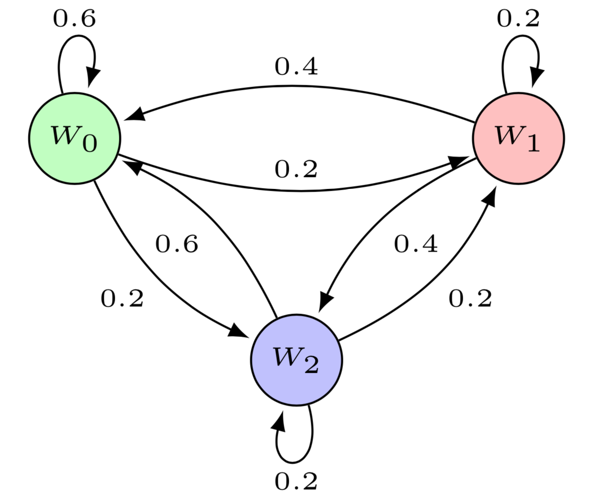
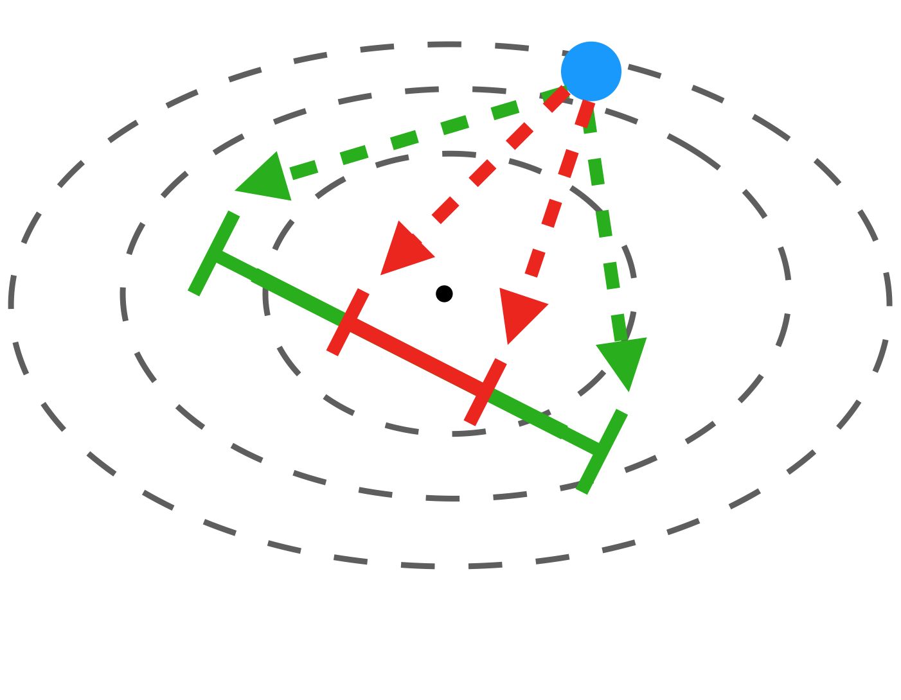
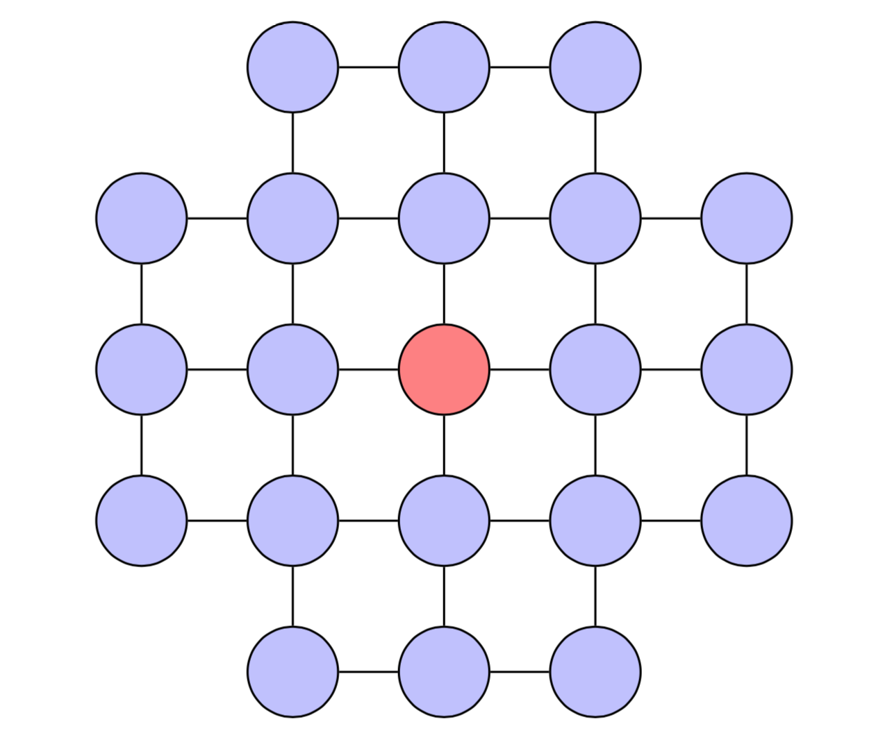
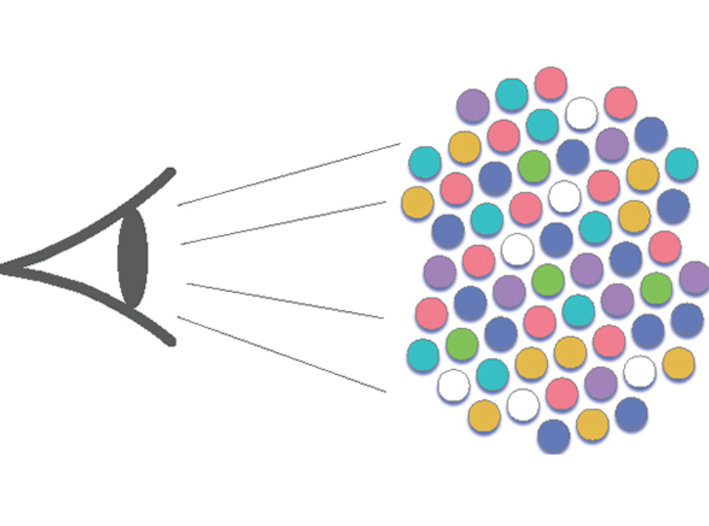

|  |
Batch Normalization Biases Deep Residual Networks Towards Shallow Paths Soham De*, Sam Smith Preprint paper / bibtex / tl;dr @article{de2020batch, title={Batch Normalization Biases Deep Residual Networks Towards Shallow Paths}, author={De, Soham and Smith, Samuel L}, journal={arXiv preprint arXiv:2002.10444}, year={2020} } We show that batch normalisation biases deep residual networks towards shallow paths with well-behaved gradients. This dramatically increases the largest trainable depth. We can recover this benefit with a simple change to the initialisation scheme. |
|  |
The Impact of Neural Network Overparameterization on Gradient Confusion and Stochastic Gradient Descent Karthik A. Sankararaman*, Soham De*, Zheng Xu, W. Ronny Huang, Tom Goldstein Preprint paper / bibtex / tl;dr @article{sankararaman2019impact, title={The Impact of Neural Network Overparameterization on Gradient Confusion and Stochastic Gradient Descent}, author={Sankararaman, Karthik A and De, Soham and Xu, Zheng and Huang, W Ronny and Goldstein, Tom}, journal={arXiv preprint arXiv:1904.06963}, year={2019} } We analyze how neural network structure affects SGD convergence. Increased layer width decreases the variance of the stochastic gradients, improving SGD convergence. Increased network depth, on the other hand, increases the variance slowing down SGD. BatchNorm and skip connections helps reduce this training burden of very deep networks. |
|  |
Adversarial Robustness through Local Linearization Chongli Qin, James Martens, Sven Gowal, Dilip Krishnan, Alhussein Fawzi, Soham De, Robert Stanforth, Pushmeet Kohli NeurIPS 2019 paper / bibtex / tl;dr @article{qin2019adversarial, title={Adversarial Robustness through Local Linearization}, author={Qin, Chongli and Martens, James and Gowal, Sven and Krishnan, Dilip and Fawzi, Alhussein and De, Soham and Stanforth, Robert and Kohli, Pushmeet}, journal={arXiv preprint arXiv:1907.02610}, year={2019} } Adversarial training is an effective but computationally costly method for training neural nets that are robust against adversarial perturbations. We introduce a regularizer that achieves state-of-the-art adversarial accuracy results on CIFAR-10 and ImageNet classifiers, while being significantly faster than adversarial training. |
|  |
Training Quantized Nets: A Deeper Understanding Hao Li*, Soham De*, Zheng Xu, Christoph Studer, Hanan Samet, Tom Goldstein NIPS 2017 paper / poster / bibtex / tl;dr @inproceedings{li2017training, title={Training quantized nets: A deeper understanding}, author={Li, Hao and De, Soham and Xu, Zheng and Studer, Christoph and Samet, Hanan and Goldstein, Tom}, booktitle={Advances in Neural Information Processing Systems}, pages={5811--5821}, year={2017} } Neural net parameters can often be compressed down to just one single bit without a significant loss in network performance, yielding a huge reduction in model size and computational workload. We develop a theory of quantized nets, and explain the performance of algorithms for weight quantization. |
|  |
Automated Inference with Adaptive Batches Soham De, Abhay Yadav, David Jacobs, Tom Goldstein AISTATS 2017 paper / slides / bibtex / tl;dr @inproceedings{de2017automated, title={Automated inference with adaptive batches}, author={De, Soham and Yadav, Abhay and Jacobs, David and Goldstein, Tom}, booktitle={Artificial Intelligence and Statistics}, pages={1504--1513}, year={2017} } We propose Big Batch SGD for automatically growing batch sizes by controlling the signal-to-noise ratio during SGD training. We show that the large batches used can generalize as well as small batches, and allows for SGD to be fully automated using adaptive step size methods. |
|  |
Understanding Norm Change: An Evolutionary Game-Theoretic Study Soham De, Dana Nau, Michele Gelfand AAMAS 2017 paper / slides / bibtex / tl;dr @inproceedings{de2017understanding, title={Understanding norm change: An evolutionary game-theoretic approach}, author={De, Soham and Nau, Dana S and Gelfand, Michele J}, booktitle={Proceedings of the 16th Conference on Autonomous Agents and MultiAgent Systems}, pages={1433--1441}, year={2017}, organization={International Foundation for Autonomous Agents and Multiagent Systems} } Human societies around the world interact with each other by developing and maintaining social norms. Using an evolutionary game theoretic model, we study how norms change in a society, based on the idea that different strength of norms in societies translate to different game-theoretic interaction structures and incentives. |
|  |
The Inevitability of Ethnocentrism Revisited: Ethnocentrism Diminishes As Mobility Increases Soham De, Michele Gelfand, Dana Nau, Patrick Roos Scientific Reports 2015 paper / press / bibtex / tl;dr @article{de2015inevitability, title={The inevitability of ethnocentrism revisited: Ethnocentrism diminishes as mobility increases}, author={De, Soham and Gelfand, Michele J and Nau, Dana and Roos, Patrick}, journal={Scientific reports}, volume={5}, pages={17963}, year={2015}, publisher={Nature Publishing Group} } Advances over the centuries have greatly increased the degree to which humans change physical locations. Using an evolutionary game theoretical model and archival data, we show that in highly mobile societies, one’s choice of action is more likely to depend on what individual one is interacting with, rather than the group to which the individual belongs. |